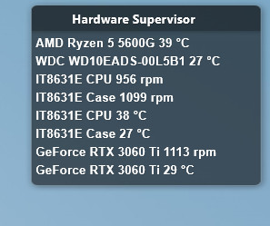

Windows service
Hardware Supervisor always runs in background as a Windows Service. So it's not necessary to enter Administrator password every time.
HardwareSupervisor is a windows service that monitor the Hardware state of your machine.
Hardware Supervisor always runs in background as a Windows Service. So it's not necessary to enter Administrator password every time.
FAN dynamically change their speed as hardware temperature change.
You can tweak your config file without the need to restart the service!
A software failure or simply a wrong configuration may burn your hardware! So use it at your own risk!
Let's see how to configure this feature. Here's an example of config.yaml file:
# CamelCase format
autoFanControl: true
# Debug, Info, Warn, Error
logLevel: Debug
sensors:
# CPU
/lpc/it8631e/0:
- temperature: 30
load: 50
- temperature: 50
load: 60
- temperature: 70
load: 100
default:
- temperature: 20
load: 30
- temperature: 30
load: 40
- temperature: 40
load: 60
- temperature: 70
load: 100
Initially it is suggested to use a Debug logLevel to understand better what's going on. In sensors key you can specify a different curve for each detected sensor. You can see which sensors are detected simply running HardwareSupervisor at least one time and looking to it's log file, you should see something like that:
2021-10-31 12:10:13.3405|INFO|AutoControls|Found sensor: /lpc/it8631e/0
2021-10-31 12:10:13.3405|INFO|AutoControls|Found sensor: /lpc/it8631e/1
2021-10-31 12:10:13.3405|INFO|AutoControls|Found sensor: /nvidiagpu/0
In this example three sensors are detected: /lpc/it8631e/0, /lpc/it8631e/1 and /nvidiagpu/0. This sensors are special,
they are temperature sensors with an enabled PWM controller unit to handle FAN spin, HardwareSupervisor can handle only these sensors.
default it's the curve used if no one can match. You can specify all curve points through it's coordinates: temperature (in celsius)
and load (in %). You can add as many points as you like. Keep in mind that if temperature < min(temperature), load will be fixed to
load(min(temperature)) and if temperature >= max(temperature), load will be fixed to load(max(temperature)).
Look at a curve example
So it's not necessary to introduce these points:
- temperature: 0
load: 20
- temperature: 100
load: 100
Even if the sensor of your beloved video card is detected it will not work!!! It's not well supported by OpenHardwareMonitor. But don't worry I've a patch for you that I will release soon.
Information are published through Windows Management Instrumentation(WMI) protocol at namespace
root/HardwareSupervisor and are available to anyone without the need to be an Administrator account.
A simple way to query HardwareSupervisor is via Power Shell, it's also a great way to see if HardwareSupervisor is working.
PS C:\> get-wmiobject -namespace "root/HardwareSupervisor" -Class Sensor
Another great way to see data collected by HardwareSupervisor is to use HardwareSupervisorRainmeterPlugin
